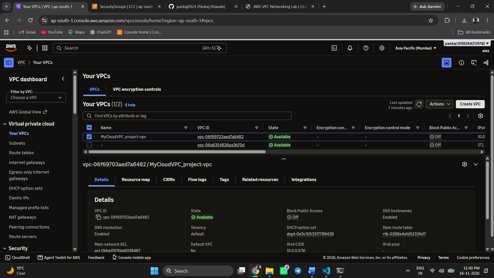
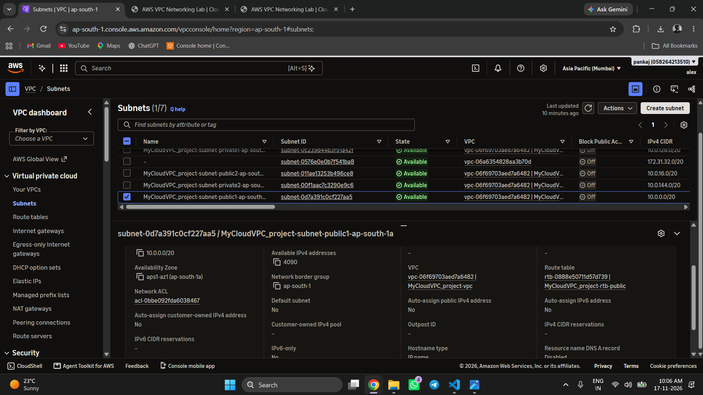
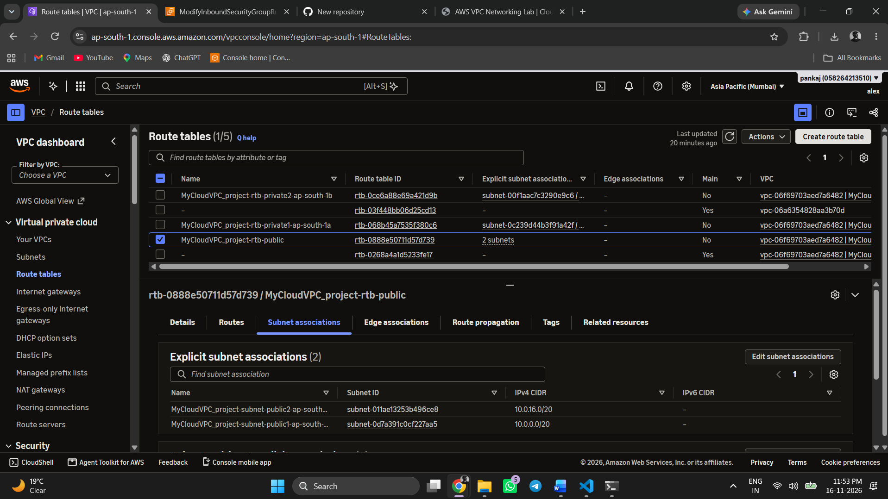
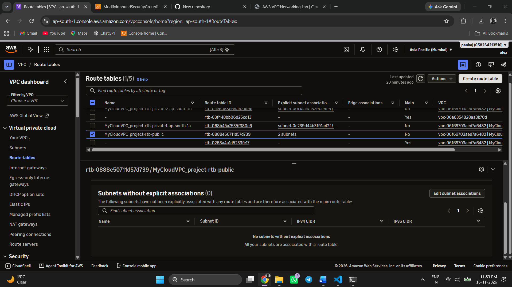
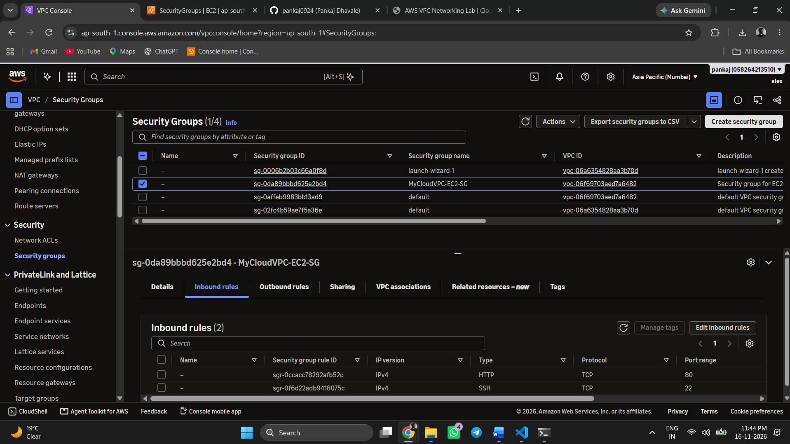
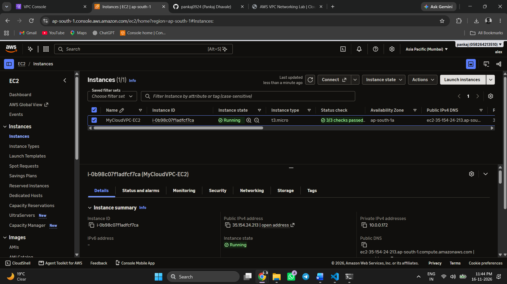
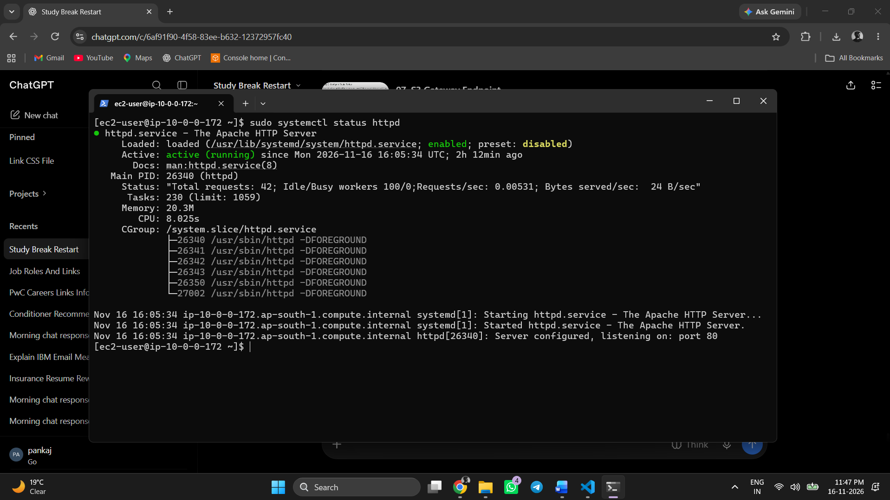
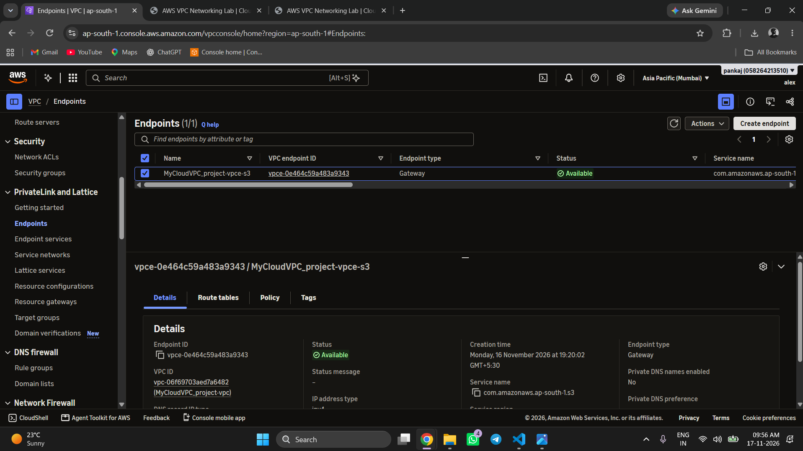
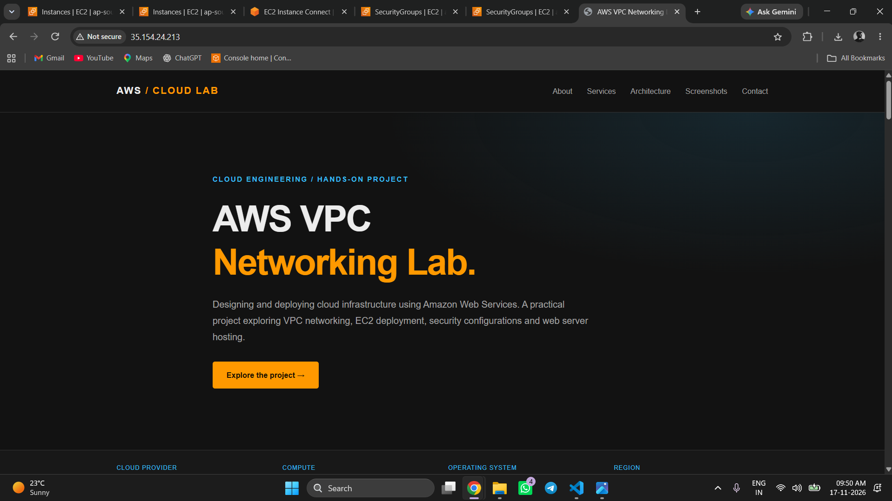

VPC Configuration
Custom VPC and CIDR configuration.
Designing and deploying cloud infrastructure using Amazon Web Services. A practical project exploring VPC networking, EC2 deployment, security configurations and web server hosting.
Explore the project →A practical exploration of AWS cloud networking and infrastructure.
The AWS VPC Networking Lab is a hands-on cloud infrastructure project focused on understanding how networking, compute resources and security configurations work within AWS.
A custom Virtual Private Cloud was configured with public and private subnets, route tables, an Internet Gateway, Security Groups, Network ACLs and an S3 Gateway Endpoint.
An Amazon EC2 instance running Amazon Linux 2023 was deployed in the public subnet. Apache HTTP Server was installed to host and serve a publicly accessible static website.
The practical goals behind the implementation.
Understand VPC architecture, subnet segmentation, routing and connectivity.
Configure instance and subnet-level network access controls.
Deploy an EC2 instance and configure Apache to host a website.
Services implemented or explored during this lab.
Custom VPC, CIDR planning and subnet architecture.
NetworkingVirtual server deployment using Amazon Linux 2023.
ComputeSSH and HTTP access rules for EC2 networking.
SecurityInternet connectivity for the public subnet.
ConnectivityObject storage and S3 Gateway Endpoint access.
StorageInstalled and configured to serve a static website.
Web ServerSubnet route associations and traffic routing.
NetworkingSubnet-level traffic filtering and access control.
SecurityIdentity and access management concepts.
Access ManagementSimplified representation of the VPC components and traffic paths.
10.0.128.0/20
Private Route Table 1
↓
S3 Gateway Endpoint
10.0.144.0/20
Private Route Table 2
↓
S3 Gateway Endpoint
Private subnets use the S3 Gateway Endpoint for S3 traffic. No NAT Gateway is configured in this lab.
Actual AWS console and server screenshots from the Cloud Support Lab.

Custom VPC and CIDR configuration.

Subnet layout across two Availability Zones.

Public subnet associations configured on the route table.

Subnets using the main route table by default.

Configured inbound HTTP and SSH rules.

Amazon Linux 2023 instance deployment.

Apache installation and service verification.

Endpoint and private route table association.

Publicly accessible website hosted on EC2.
Practical concepts covered during the project.
Infrastructure details used in this implementation.